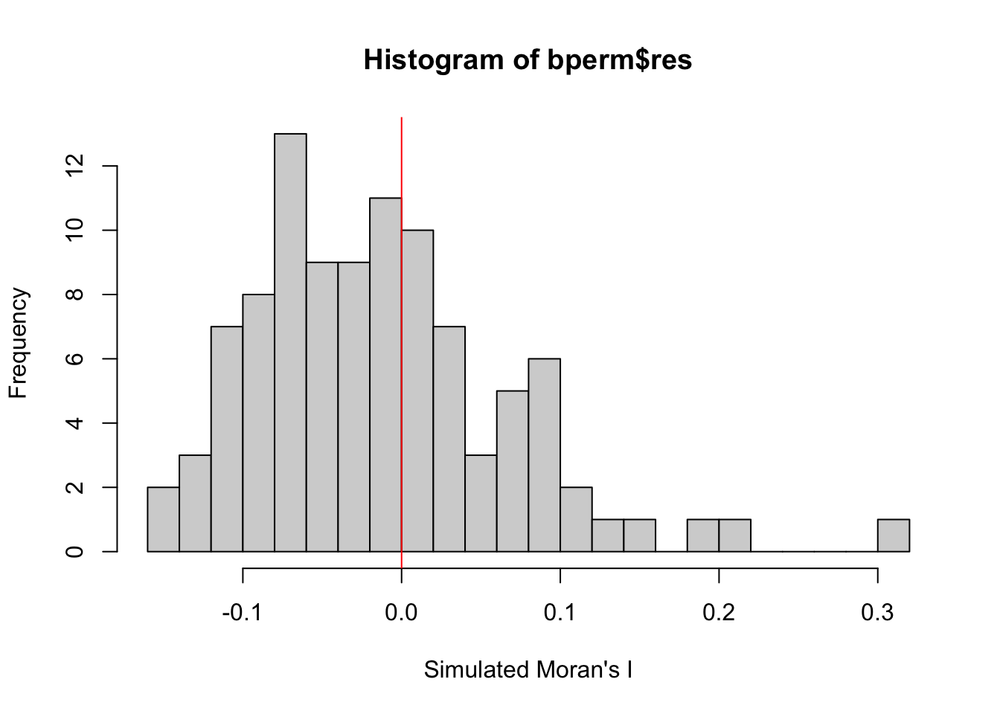
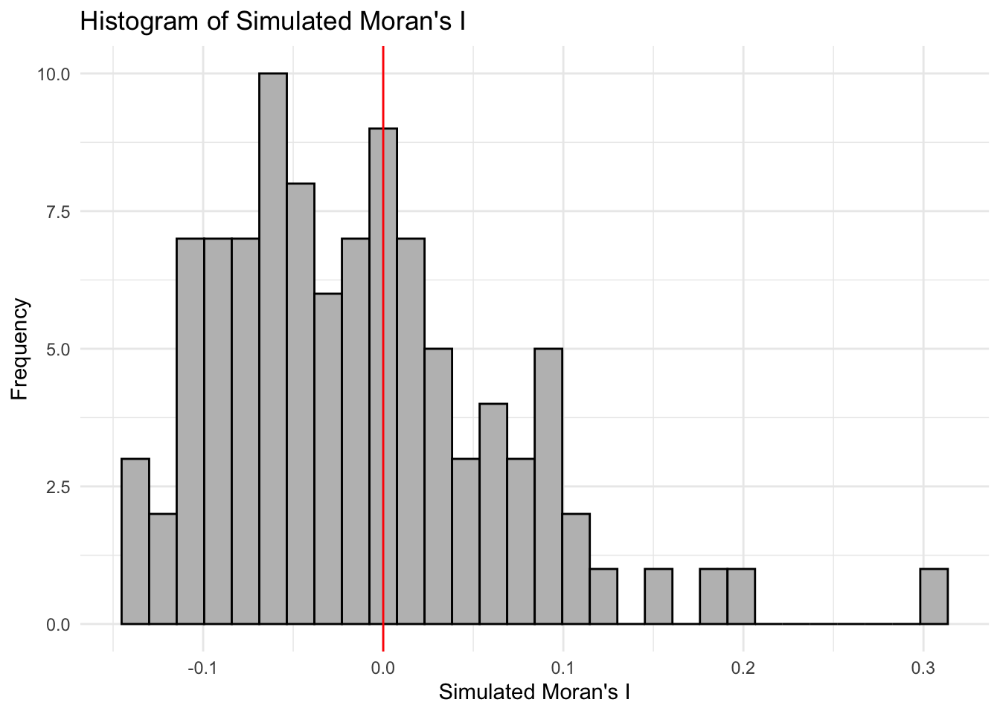

pacman::p_load(sf,spdep,tmap,tidyverse)Hands-On Exercise 6: Measures of Spatial Autocorrelation
Global
I will be computing Global Measures of Spatial Autocorrelation (GMSA) by using spdep package
Overview
import geospatial data using appropriate function(s) of sf package,
import csv file using appropriate function of readr package,
perform relational join using appropriate join function of dplyr package,
compute Global Spatial Autocorrelation (GSA) statistics by using appropriate functions of spdep package,
plot Moran scatterplot,
compute and plot spatial correlogram using appropriate function of spdep package.
provide statistically correct interpretation of GSA statistics.
Setup
Goal
Our task in this study, hence, is to apply appropriate spatial statistical methods to discover if development are even distributed geographically. If the answer is No. Then, our next question will be “is there sign of spatial clustering?”. And, if the answer for this question is yes, then our next question will be “where are these clusters?”
In this case study, we are interested to examine the spatial pattern of a selected development indicator (i.e. GDP per capita) of Hunan Provice, People Republic of China.
Data
Hunan province administrative boundary layer at county level. This is a geospatial data set in ESRI shapefile format.
Hunan_2012.csv: This csv file contains selected Hunan’s local development indicators in 2012.
Before we get started, we need to ensure that spdep, sf, tmap and tidyverse packages of R are currently installed in your R.
sf is use for importing and handling geospatial data in R,
tidyverse is mainly use for wrangling attribute data in R,
spdep will be used to compute spatial weights, global and local spatial autocorrelation statistics, and
tmap will be used to prepare cartographic quality chropleth map.
The code chunk below is used to perform the following tasks:
creating a package list containing the necessary R packages,
checking if the R packages in the package list have been installed in R,
- if they have yet to be installed, RStudio will installed the missing packages,
launching the packages into R environment.
Data Wrangling
Hunan province administrative boundary layer at county level
hunan <- st_read('data/geospatial', layer = 'Hunan')Reading layer `Hunan' from data source
`/Users/williamtjw/is415-gaa-williamtjw/resources/Hands-on_Ex/ex6/data/geospatial'
using driver `ESRI Shapefile'
Simple feature collection with 88 features and 7 fields
Geometry type: POLYGON
Dimension: XY
Bounding box: xmin: 108.7831 ymin: 24.6342 xmax: 114.2544 ymax: 30.12812
Geodetic CRS: WGS 84Hunan_2012 development indicators
hunan2012 <- read_csv('data/aspatial/Hunan_2012.csv')Rows: 88 Columns: 29
── Column specification ────────────────────────────────────────────────────────
Delimiter: ","
chr (2): County, City
dbl (27): avg_wage, deposite, FAI, Gov_Rev, Gov_Exp, GDP, GDPPC, GIO, Loan, ...
ℹ Use `spec()` to retrieve the full column specification for this data.
ℹ Specify the column types or set `show_col_types = FALSE` to quiet this message.Update the attribute table of hunan’s SpatialPolygonsDataFrame with the attribute fields of hunan2012 dataframe
hunan <- left_join(hunan,hunan2012) %>% dplyr::select(1:4, 7, 15)Joining with `by = join_by(County)`Prepare a basemap and a choropleth map showing the distribution of GDPPC 2012
equal <- tm_shape(hunan) +
tm_fill("GDPPC", n = 5, style = "equal") +
tm_borders(alpha = 0.5) +
tm_layout(main.title = "Equal interval classification")
quantile <- tm_shape(hunan) +
tm_fill("GDPPC", n = 5, style = "quantile") +
tm_borders(alpha = 0.5) +
tm_layout(main.title = "Equal quantile classification")
tmap_arrange(equal, quantile, asp=1, ncol=2)
Global Measures of Spatial Autocorrelation
Objectives
compute global spatial autocorrelation statistics and
perform spatial complete randomness test for global spatial autocorrelation
Computing Contiguity Spatial Weights
Compute contiguity weight matrices for the study area
# builds a neighbours list based on regions with contiguous boundaries
wm_q <- poly2nb(hunan, queen=TRUE)
summary(wm_q)Neighbour list object:
Number of regions: 88
Number of nonzero links: 448
Percentage nonzero weights: 5.785124
Average number of links: 5.090909
Link number distribution:
1 2 3 4 5 6 7 8 9 11
2 2 12 16 24 14 11 4 2 1
2 least connected regions:
30 65 with 1 link
1 most connected region:
85 with 11 linksRow-standardised weights matrix
Assign equal weights (style=“W”) to each neighboring polygon
rswm_q <- nb2listw(wm_q, style="W", zero.policy = TRUE)
rswm_qCharacteristics of weights list object:
Neighbour list object:
Number of regions: 88
Number of nonzero links: 448
Percentage nonzero weights: 5.785124
Average number of links: 5.090909
Weights style: W
Weights constants summary:
n nn S0 S1 S2
W 88 7744 88 37.86334 365.9147
The input of
nb2listw()must be an object of class nb. The syntax of the function has two major arguments, namely style and zero.poly.style can take values “W”, “B”, “C”, “U”, “minmax” and “S”. B is the basic binary coding, W is row standardised (sums over all links to n), C is globally standardised (sums over all links to n), U is equal to C divided by the number of neighbours (sums over all links to unity), while S is the variance-stabilizing coding scheme proposed by Tiefelsdorf et al. 1999, p. 167-168 (sums over all links to n).
If zero policy is set to TRUE, weights vectors of zero length are inserted for regions without neighbour in the neighbours list. These will in turn generate lag values of zero, equivalent to the sum of products of the zero row t(rep(0, length=length(neighbours))) %*% x, for arbitrary numerical vector x of length length(neighbours). The spatially lagged value of x for the zero-neighbour region will then be zero, which may (or may not) be a sensible choice.
Global Measures of Spatial Autocorrelation: Moran’s I
Perform Moran’s I statistics testing by using moran.test() of spdep.
Performs Moran’s I statistical test
moran.test(hunan$GDPPC, listw=rswm_q, zero.policy = TRUE, na.action=na.omit)
Moran I test under randomisation
data: hunan$GDPPC
weights: rswm_q
Moran I statistic standard deviate = 4.7351, p-value = 1.095e-06
alternative hypothesis: greater
sample estimates:
Moran I statistic Expectation Variance
0.300749970 -0.011494253 0.004348351 Moran I Statistic:
- Moran I = 0: No spatial autocorrelation; high GDPPC values are randomly distributed.
Moran I > 0: Positive spatial autocorrelation; high GDPPC values cluster together.
Moran I < 0: Negative spatial autocorrelation; dissimilar GDPPC are near each other (e.g., high values next to low values).
Large Moran I statistic standard deviate and Small p-value: strong statistical evidence against H0 (no spatial autocorrelation) and conversely observed clusters of GDPPC is statistically significant.
Compute Monte Carlo (MC) Moran’s I
set.seed(6969)
bperm= moran.mc(hunan$GDPPC, listw=rswm_q, nsim=99, zero.policy = TRUE, na.action=na.omit)
bperm
Monte-Carlo simulation of Moran I
data: hunan$GDPPC
weights: rswm_q
number of simulations + 1: 100
statistic = 0.30075, observed rank = 100, p-value = 0.01
alternative hypothesis: greaterConsistent with previous findings:
statistic = 0.30075; positive spatial autocorrelation
0.025 < significance level
Visualise Monte Carlo (MC) Moran’s I
mean(bperm$res[1:99])[1] -0.01626548var(bperm$res[1:99])[1] 0.005356579summary(bperm$res[1:99]) Min. 1st Qu. Median Mean 3rd Qu. Max.
-0.14275 -0.07003 -0.02487 -0.01627 0.02691 0.20051 hist(bperm$res,
freq=TRUE,
breaks=20,
xlab="Simulated Moran's I")
abline(v=0,
col="red") 
Using ggplot2()
library(ggplot2)
simulated_results <- data.frame(bperm$res)
# Create the histogram using ggplot2
ggplot(simulated_results, aes(bperm$res)) +
geom_histogram(bin=20, fill = "gray", color = "black",) +
geom_vline(xintercept = 0, color = "red") +
labs(x = "Simulated Moran's I",
y = "Frequency",
title = "Histogram of Simulated Moran's I") +
theme_minimal()Warning in geom_histogram(bin = 20, fill = "gray", color = "black", ): Ignoring
unknown parameters: `bin``stat_bin()` using `bins = 30`. Pick better value with `binwidth`.
Global Measures of Spatial Autocorrelation: Geary’s C
Perform Geary’s C statistics testing by using appropriate functions of spdep package
Spatial Correlogram
Local
Overview
import geospatial data using appropriate function(s) of sf package,
import csv file using appropriate function of readr package,
perform relational join using appropriate join function of dplyr package,
compute Local Indicator of Spatial Association (LISA) statistics for detecting clusters and outliers by using appropriate functions spdep package;
compute Getis-Ord’s Gi-statistics for detecting hot spot or/and cold spot area by using appropriate functions of spdep package; and
to visualise the analysis output by using tmap package.
Setup
Same as Global Measure
Data Wrangling
Same as Global